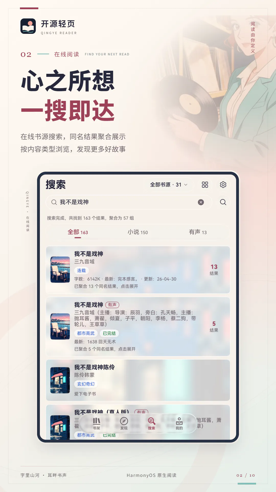

开源轻页使用说明书
一款 HarmonyOS 原生阅读应用：自己导入书源或本地文件，在手机、平板和电脑上看小说、看漫画、听书与观看书源提供的视频。



先了解：应用本身不带任何小说、漫画、音频或书源。你能读到什么，取决于你自己导入的书源规则和本地文件。请只使用自有、已获授权或明确允许访问的内容。
快速上手
第一次打开时书架是空的。按下面的顺序走一遍，就能读到第一本书。
- 导入书源打开 我的 › 书源管理，点右下角“+”，选择“从 URL 导入”或“从文件导入”。文件里有多个书源时，可以先勾选再点“导入所选”。
- 校验书源在书源管理里点“校验”，先看看哪些书源能用。明确失败的可以一键禁用。
- 找书到“搜索”页输入书名，或到“发现”页按站点和分类逛。
- 加入书架点开结果进入书籍详情，点“加入书架”。也可以直接“开始阅读”试读，返回时再决定要不要留下。
- 开始阅读在书架点书籍封面。阅读时点屏幕中央呼出菜单，调字号、翻页方式和背景。
只想读自己的 TXT 或 EPUB？跳过书源，直接去 我的 › 书籍导入 › 本地导入 选文件即可。
界面总览
底部有四个页签，所有功能都从这里进入。
“我的”页有哪些入口
页面顶部是账号卡片（未登录时显示“登录华为账号”）和“数据同步”。下面的入口依次是：
| 入口 | 里面有什么 |
|---|---|
| 阅读统计 | 按日、周、月查看阅读时长和书籍排行。 |
| 书源管理 | 导入、校验、分组、编辑、调试书源。 |
| 书籍导入 | 本地导入、OPDS 书库、WebDAV 服务。 |
| 阅读设置 | 排版、字体、背景、翻页、点击区域、预缓存、替换净化、眼动翻页。 |
| 朗读设置 | 音色、倍速、自定义音色管理、在线朗读字数。 |
| 书架设置 | 书籍信息显示、布局、隐私书架、封面图集。 |
| 搜索/发现配置 | 结果展示、精准搜索、聚合、并发数。 |
| 主题 | 当前使用的主题、默认与自定义方案、已购主题和更多主题。 |
| 其他设置 | 数据导入导出、浏览器看书、磨砂玻璃、全局字体、图标、沉浸光感、脚本引擎迁移。 |
| 帮助 | 应用内的使用说明，也就是本说明书，离线可看。 |
| 关于 | 项目说明、问题反馈、开源许可。 |
本说明书里写成 我的 › 某项 的地方，都是指从这里点进去。
播放胶囊
朗读或听书时离开阅读页，首页会出现一个悬浮的播放胶囊，显示“朗读中”“听书中”或“已暂停”和当前章节。点它可以展开控制面板，不用回到书里就能暂停、切章、定时或停止。
桌面卡片与快捷方式
- “最近阅读”服务卡片：添加到桌面后显示最近读的书，点“继续阅读”直接回到上次的位置，卡片上可以手动刷新。还没读过书时显示“暂无最近阅读”。
- “最近阅读”快捷方式：长按桌面图标出现，一步回到最近读的书。
- 隐私书架里的书不会出现在卡片和快捷方式里。
书架
书架统一管理小说、漫画、有声书和视频。书架为空时会提示你去搜索或导入。
顶部工具栏
| 位置 | 作用 |
|---|---|
| 布局切换 | 顶部布局图标，在紧凑、宽松、平铺三种布局间切换。 |
| 类型分类 | 全部、小说、漫画、有声书、视频，只显示当前有书的类型。网络 / 本地改在筛选中选择。 |
| 筛选 | 漏斗按钮，按来源、状态、阅读进度、最近阅读、更新、标签或书源组合筛选，也可打开“搜索书架”。 |
| 排序 | 新阅读（最近读的在前）、新加入（最近加入的在前）、名称。 |
| 标题 / 分组 | 点标题下拉切换全部、未分组或自建分组，并管理分组；旁边显示书籍数量。 |
筛选与搜索书架
点右上角筛选按钮，各组可多选，再点一次取消。不同组的条件要同时满足，同组只要满足其中一个。例如“网络 + 已完结”只看已完结的网络书；标签同时选两个，则显示包含任意一个标签的书。
| 筛选组 | 可选内容 |
|---|---|
| 来源 / 状态 | 网络、本地；已完结、连载中。 |
| 进度 / 更新 | 未读、在读、已读完；有更新。“已读完”指已读到现有目录末尾，不代表作品已完结。 |
| 最近阅读 | 一周内、一月内、三个月没读。未打开过的书按加入书架的时间判断是否长期没读。 |
| 标签 / 书源 | 点进二级列表选择，选项随当前书架变化并显示本数；标签包含自定义标签，书源只统计网络书。 |
菜单里的“搜索书架”会展开输入框，按书名、作者、书源或标签过滤已有书籍，不发起网络搜书。它可与分组、类型和筛选一起使用；点“取消”清空关键词并收起输入框，点“清除筛选”移除筛选条件。没有结果时先检查是否叠加了过多条件。
书籍卡片上的信息
- 上次阅读：最近读的那本书排在最前，封面右侧有一张“扉页”，可以显示书籍信息或上次读到的正文片段（在书架设置里选）。
- 阅读进度：显示“已读 27.3%”这样的百分比、未读章数（如“12 章未读”）或“已读完”。
- “新”角标：连载有新章节时出现在封面上。
- 类型标识：书名前的“书／漫／声”，分别表示普通书、漫画和有声书。
- 置顶标记：置顶的书固定在最前面。
- 平铺布局下，分组会显示成一个文件夹，下面写着“共 N 本”。
刷新书架
在书架下拉，松手后开始检查网络连载更新，已完结的书会被跳过。本地文件不会从书源获取新章节；应用也会在后台静默检查更新，封面的“新”角标提示有更新。
长按书籍能做什么
| 操作 | 说明 |
|---|---|
| 查看书籍详情 | 看简介、完整目录，点作者名可搜索同作者的书。 |
| 置顶 / 取消置顶 | 把常看的书固定在最前面。 |
| 换源 | 当前书源失效或更新慢时，换成其他书源的同一本书。本地书不支持换源。 |
| 缓存 | 提前下载章节，离线也能读。详见缓存与替换净化。 |
| 获取网络封面 | 用书名在启用的书源里找封面，从候选里挑一张。 |
| 自定义链接 | 在获取网络封面的窗口里，填一个 http 或 https 图片地址，点“设为封面”。 |
| 恢复默认封面 | 撤销上面两种自定义封面。 |
| 编辑书籍信息 | 修改书名和作者（作者可留空，书名不能为空）。 |
| 自定义标签 | 给书加上自己的标签，可加多个，点“×”删除。 |
| 移动分组 | 把书放进某个分组，没有合适的分组时可以当场新增。 |
| 标记为隐私 / 取消隐私 | 移入或移出隐私书架。 |
| 保存源文件 | 仅本地书：把导入的 TXT/EPUB 原文件另存到你选的位置。 |
| 多选 | 进入批量模式。 |
| 移出书架 | 删除这本书，会先弹出确认。 |
多选批量操作
长按选“多选”后，书籍前出现勾选框，顶部显示“已选择 3/19”。可以全选或取消全选，然后：
- 删除：把选中的书一起移出书架。
- 分组：一起移动到某个分组。
- 更多：批量标记为隐私或取消隐私；批量保存源文件（只对本地书有效，缓存的网络书无法保存）。
分组
- 分组名称不能重复。
- 删除分组后，里面的书回到“未分组”，书本身不会被删除。
- “全部”和“未分组”是固定的，不能改名或删除。
隐私书架
- 到 我的 › 书架设置 › 隐私书架 打开开关，再从书架最后一个类型分类继续左滑进入隐私书架。
- （可选）在“隐私书架密码”里设置密码，之后进入隐私书架要先输入。新密码留空保存即可清除密码。
- 回到书架，长按想隐藏的书，选“标记为隐私”。
- 隐私书籍不会出现在普通书架、桌面卡片、最近阅读快捷方式和浏览器看书里。
- 隐私书籍的阅读时长照常记录，但不在阅读统计里显示；取消隐私后恢复显示。
- 关闭隐私书架开关后，隐私书籍继续隐藏，并不会回到普通书架；设了密码的话，关闭前要先验证密码。
忘记密码：只能用“重置隐私书架”。它会删除所有隐私书籍及其进度、书签，并关闭隐私书架，无法撤销。
书架设置与封面
入口：我的 › 书架设置。
书籍信息
| 设置项 | 作用 |
|---|---|
| 书籍打开动画 | 点击书籍时显示封面展开动画。 |
| 类型标识 | 在书名前显示“书／漫／声”。 |
| 书籍标签 | 书架卡片是否显示标签。 |
| 书籍来源 | 书架卡片是否显示来自哪个书源。 |
| 书籍简介 | 显示书源抓取到的简介。 |
| 显示全部简介 | 卡片上显示完整简介，不截断。 |
| 使用阅读进度条 | 卡片底部显示阅读百分比和阅读信息。 |
| 显示最后阅读时间 | 进度条旁显示最近一次阅读的时间（如“今天 21:30”）。 |
| 显示最后阅读章节 | 进度条旁显示最近读到的章节。 |
| 书架布局 | 紧凑、宽松（列表，信息密度不同）或平铺（封面网格）。 |
| 上次阅读扉页设置 | 最近阅读那本书封面右侧显示什么：书籍信息、内容预览（上次读到的正文），或自适应。 |
封面设置
封面图集是一组你自己准备的图片，用来给书架上的书统一换封面。
| 设置项 | 作用 |
|---|---|
| 忽略原始封面 | 打开后书架只用图集里的封面，不再显示书源或文件自带的封面。 |
| 封面模式 | 图集里有多张图时，按顺序分配还是随机分配。 |
| 浅色配色图集 | 浅色模式下用哪个图集，也可以选“不使用图集”。 |
| 深色配色图集 | 深色模式下用哪个图集。 |
| 图集应用范围 | 全部应用，或只对“指定书籍”生效（从列表里勾选）。 |
图集管理
在“封面图集 › 图集管理”里：
- 新建图集：输入名称创建。页面顶部显示图集数量、图片总数和当前图集。
- 上传图片：从相册选多张图片加入当前图集。
- 上传 ZIP：选一个压缩包，里面的图片会全部导入。
- 导出 ZIP：把当前图集打包保存，方便分享或备份。
- 管理图片：进入选择模式，全选或逐张勾选后“删除所选”。
- 重命名图集 / 删除图集。
主题也可以自带封面。在应用主题时打开“应用主题封面”，书架会使用主题封面和配套的书籍边框，见主题与外观。
搜索
搜一本书
- 在“搜索”页输入关键词，点“搜索”。
- 应用在所有已启用且支持搜索的书源里同时查找，结果边搜边出。
- 不想等了就点“停止搜索”，已出来的结果会保留。
每条结果显示书名、作者、封面，以及书源提供的字数、最新章节、更新时间和标签。结果右侧可以直接“加入书架”（已在书架的显示“移出书架”）或点“阅读”试读；点卡片进入书籍详情。
结果按小说、漫画、有声书和视频分类查看，同名聚合不会跨类型合并。可切换列表与平铺布局；向上滚动时标题、搜索框和状态行收起，保留结果分类栏。
搜索范围
搜索框下方显示当前范围，例如“全部书源 · 86”。点“选择”打开搜索范围面板：
- 可以按分组整组勾选，也可以逐个勾选书源，支持全选和取消全选。
- 面板里的搜索框可以按书源名或分组名查找。
- 一个书源都没选时无法搜索，会提示先选择书源。
想只用某一个书源搜，也可以到书源管理里点该书源菜单中的“搜索”。
搜索历史
搜索框为空时显示搜索历史，点一下重新搜索。可以单条删除，也可以点“清除”全部清空。
搜索设置
搜索页右上角可以打开搜索设置，同样的选项也在 我的 › 搜索/发现配置。
| 设置项 | 作用 |
|---|---|
| 精准搜索 | 只保留书名与关键词完全一致的结果。 |
| 匹配作者 | 精准搜索开启时，关键词也可以匹配作者名。 |
| 显示搜索进度 | 搜索时显示已搜完的书源数量和结果数量。 |
| 聚合同名结果 | 同名书合并成一条，标着“已聚合 N 个同名结果”，点开查看各个书源的版本。 |
| 搜索并发数 | 同时请求的书源数量，1 到 12，默认 6。除了搜书，换源、获取网络封面和书源的“搜索能力”校验也用这个并发数；“发现/阅读链路”校验不受它影响。网络差或书源容易限流时调低一些。 |
搜索/发现配置 里另外还有：
| 设置项 | 作用 |
|---|---|
| 显示结果封面 | 搜索和发现结果是否显示封面。关掉更省流量、列表更紧凑。 |
| 使用书架图集 | 结果列表的封面改用书架封面设置里的浅色/深色图集。 |
| 封面模糊背景 | 默认开启，在搜索和发现的列表结果中显示封面模糊背景；关闭后使用纯色卡片背景。结果封面是否显示由“显示结果封面”单独控制。 |
| 显示结果标签 | 结果是否显示书籍标签。 |
| 返回提示加入书架 | 从搜索或发现的详情点了阅读、但没加入书架时，返回会问你“是否加入书架”。 |
遇到“去验证”
搜索结束后如果提示“有书源需要网页验证”，说明某些网站要求先通过验证码或登录。点“去验证”，在打开的网页里完成操作后点“完成”，再回来重新搜索。
发现
发现页读取书源自带的站点、分类和榜单。只有在书源管理里“启用发现”的书源才会出现在这里。
浏览内容
- 在顶部选择书源。书源多的时候可以按分组筛选，或输入书源关键词查找。
- 在频道栏切换模式、站点或站内分类；分类较多时可横向滑动，或点右端“全部分类”打开面板，按分组浏览、搜索和选择最近使用的分类。
- 列表下方显示书籍，上滑加载更多，到底会提示“已加载全部”。
列表标题会显示当前位置，例如“某站 · 某书源 · 玄幻 · 40 本”；后面带“缓存”表示显示的是上次保存的内容，点“刷新发现内容”获取最新。
应用会记住每个书源上次停留的分类；切换到其他页签再回来保留浏览内容。列表和平铺布局都可用，平铺列数随屏幕宽度变化。
筛选条件
书源提供了字数、状态、排序等额外条件时，点顶部“筛选”按钮调整，选好后点“完成”应用。模式和频道可直接在频道栏切换；没有这些规则的书源不会显示对应条件。
对书源的快捷操作
在发现页的书源上可以直接：
- 登录：书源需要账号时，在这里打开登录界面。
- 源变量：编辑这个书源的变量（有些书源用它保存 Token 或个人配置）。
- 编辑：进入书源编辑页。
- 删除：删除书源，不可恢复；锁定的书源不能删除。
发现书源排序
“书源排序”页列出所有启用了发现的书源，可以拖动或用上下箭头调整顺序，保存后发现页按这个顺序显示。
没有内容时
- “当前书源可能需要网页验证”：点“去验证”或“网页验证”完成后重试。
- “没有发现内容”：换一个书源或分类，或检查该书源的发现地址是否有效。
- “暂无启用发现的书源”：先到书源管理里启用发现。
书籍详情与换源
书籍详情页
- 基本信息：书名、作者、封面、更新时间、简介；已在书架的会标出“已在书架”。
- 点作者名：询问是否以作者为关键词搜索，确认后跳到搜索结果。
- 目录：显示“共 N 章”，点进去看该书源的完整章节列表。
- 换源：搜索其他书源里的同一本书。
- 加入书架：收藏这本书。
- 开始阅读 / 开始听书：直接打开。没加入书架也能读，这叫试读；返回时会询问“是否加入书架”，选“不加入”就不留痕迹。
完整目录页
- 顶部显示来源书源和章节总数；带“本地缓存”表示目录来自缓存。
- 可以搜索章节名，切换正序或倒序。
- 已缓存的章节带“已缓存”标记。
- 点任意章节从那一章开始读。
- 目录加载失败时点“重试”；提示“该书源未解析出章节”通常是书源的目录规则有问题。
短剧等视频内容
原生书源可以提供短剧这类视频内容。它们的详情页标题是“剧集详情”，按钮是“选集”和“开始观看”。
- 点“开始观看”直接进入播放页，接着上次看到的那一集和位置继续播放；加入书架后从书架打开也是这样。
- 播放页全屏显示。点一下画面显示或隐藏操作栏，双击暂停或继续。
- 操作栏上有上一集、下一集、选集、连播开关、倍速和横屏切换，进度条可以拖动。
- 开着连播时，一集播完自动播下一集。
- 播放不了时画面中间会显示原因，点一下重试。
换源
换源可以从书架长按菜单、书籍详情页或阅读菜单打开。
- 应用用当前书名做全词匹配，在启用的书源里搜索。
- 如果之前搜过，会先显示历史结果；点刷新重新搜索。
- 每个候选显示书源名、作者和最新章节，点“切换”。
- 切换成功后提示“已切换至某书源”，阅读进度尽量保留在对应章节。
- 如果新书源的目录是空的，应用会保留原书源，不会切换。
- 本地书籍不需要换源。
书源管理
书源是一段规则，告诉应用去哪个网站、怎样取出书名、目录和正文。应用支持两种书源：开源轻页自己的原生书源，以及 Legado（阅读）格式的兼容书源。入口：我的 › 书源管理。
原生书源与兼容书源
| 原生书源 | 兼容书源 | |
|---|---|---|
| 来历 | 开源轻页自己定义的格式。 | Android 阅读（Legado）的书源格式。 |
| 规则 | 声明式规则与表达式，也支持 JS 函数库和后台脚本；普通用户直接导入使用。 | 规则里可以带 JavaScript，由应用内的兼容脚本环境执行。 |
| 设置与登录 | 集中在“书源设置”里，支持动态选项、脚本按钮与多步登录，界面由应用生成。 | 由书源自己定义的登录面板提供。 |
| 短剧等视频 | 用应用自带的播放页，全屏播放、页内选集。 | 只能跳到网页播放。 |
| 听书音色 | 书源提供音色列表，直接点选。 | 手动填写音色代码。 |
| 目录分卷 | 显示卷名。 | 不显示。 |
| 状态 | 推荐。 | 已过时，现有书源仍可正常使用。 |
- 搜索、发现、书架和阅读里两种书源混在一起用，不需要区分。
- 书源列表里每个书源带“原生”或“兼容”标记，列表顶部可以按“全部 / 原生 / 兼容”切换。
- 导入时应用自动识别是哪一种，不用选择。原生书源在导入时会检查规则写法，有问题会直接说明原因、不予导入。
- 同一个地址只能有一个书源。在同一地址上用一种格式替换另一种时，原来的书源变量和登录状态不会保留，需要重新设置和登录。
导入书源
点右下角“+”：
| 方式 | 说明 |
|---|---|
| 从 URL 导入 | 粘贴书源地址。地址返回的内容必须是书源 JSON。 |
| 从文件导入 | 选择本地的 JSON 或文本文件，最大 25MB。 |
| 新建原生书源 | 打开原生书源的编辑页，里面预填了一份模板。 |
| 新建兼容书源 | 打开空白的兼容书源编辑页，自己填写规则。 |
| 系统“打开方式” | 在文件管理等应用里，用开源轻页打开书源文件。 |
- 文件或地址里包含多个书源时，会先弹出列表让你勾选，再点“导入所选”。
- 导入完成会提示成功数量，以及其中有几个需要登录。
- 如果已有一个地址相同且被锁定的书源，新书源不会覆盖它，需要先解锁。
- 导入会保留书源里应用不认识的字段，导出时原样带回，方便和 Android 阅读互相传递。
书源列表
每个书源显示名称、地址、分组和状态标记：原生 / 兼容、已启用 / 已禁用、发现已启用 / 已禁用、已登录 / 未登录、已锁定、已置顶，以及最近一次的校验状态。
- 搜索书源：顶部搜索框按名称或地址查找。
- 类型切换：搜索框下方的“全部 / 原生 / 兼容”只显示对应类型的书源。
- 分组标签：全部、未分组和各分组之间切换。
- 拖动排序：按住书源左侧的“☰”拖动，调整顺序后自动保存。书源顺序会影响搜索时的先后。
- 右侧滚动条：书源很多时可以拖动快速定位。
筛选与排序
点“筛选书源”，可以组合下面的条件，点“重置”恢复默认：
| 条件 | 选项 |
|---|---|
| 书源状态 | 不限、已启用、未启用。 |
| 发现页面 | 不限、有发现页、无发现页。 |
| 发现状态 | 不限、发现已启用、发现已禁用。 |
| 登录要求 | 不限、需要登录、无需登录。 |
| 校验状态 | 不限、未校验、通过、失败、无结果、需要验证、暂时异常。 |
| 排序 | 默认、最新在前、最旧在前、名称排序。 |
单个书源的操作
| 操作 | 说明 |
|---|---|
| 启用 / 禁用 | 禁用后不参与搜索和发现，但已在书架的书仍可阅读。 |
| 启用发现 / 禁用发现 | 单独控制是否出现在发现页。 |
| 搜索 | 只用这个书源搜书。 |
| 书源设置 | 只有原生书源有。修改书源变量（比如模式、服务器、各种开关），登录、检查登录、退出登录，以及书源提供的操作按钮（比如签到）。 |
| 登录 / 重新登录 | 只有兼容书源有。打开书源的登录界面。 |
| 调试 | 进入单书源调试页。 |
| 修改 | 进入书源编辑页。原生书源和兼容书源的编辑页不同。 |
| 置顶 / 取消置顶 / 置底 | 调整在列表中的位置。 |
| 锁定 / 解锁 | 锁定的书源不能被修改、删除，也不会被自动校验禁用或被导入覆盖。 |
| 取消证书信任 | 撤销之前对该书源主机的证书信任（只有信任过才会出现）。 |
| 多选 | 进入批量模式。 |
| 删除 | 删除书源，会先确认。 |
多选批量操作
进入多选后可以全选，然后：启用、禁用、设置分组、校验所选、启用发现、禁用发现、锁定、解锁、导出 JSON、删除。
- 设置分组：输入新分组名称，留空表示移到未分组。
- 导出 JSON：把选中的书源保存成一个文件，可以分享或导入到其他设备。
分组管理
点分组标签旁的“＋”或进入“分组管理”：新建分组、重命名、删除所选，以及“清除空分组”一键删掉没有书源的分组。删除分组后，里面的书源移到未分组，不会被删除。
校验书源
点“校验”打开校验设置。校验全部启用的书源，或在多选后“校验所选”。
第一步：选校验模式
| 模式 | 做什么 |
|---|---|
| 搜索能力 | 用关键词测试书源能否搜到书。速度快。 |
| 发现/阅读链路 | 逐个书源运行发现、详情、目录和第一个非付费章节。更彻底，也更慢。遇到登录、验证、VIP 或付费内容只会提示，不会尝试绕过。 |
第二步：选处理方式
| 方式 | 做什么 |
|---|---|
| 仅校验 | 只记录结果，完成后由你手动处理。 |
| 自动禁用 | 只禁用明确失败的书源，之后可以重新启用。 |
| 自动删除 | 只删除明确失败的书源，不可恢复。 |
第三步：看结果
| 校验结果 | 含义 | 会被自动处理吗 |
|---|---|---|
| 通过 | 书源工作正常。 | 不会 |
| 失败 | 请求或规则明确出错。 | 会 |
| 无结果 | 请求成功，但没取到内容。 | 不会 |
| 需要验证 | 网站要求登录或验证码。 | 不会 |
| 暂时异常 | 超时等临时问题，稍后可能恢复。 | 不会 |
- 校验过程显示进度“已校验 12/86”。点“后台”可以让它在后台继续，通知栏里能看到进度并取消。
- 选了“仅校验”的话，完成后可以点“禁用失败项”或“删除失败项”手动处理。
- 锁定的书源即使失败也不会被禁用或删除。
- 之后可以用筛选里的“校验状态”找出某一类书源集中处理。
注意：“自动删除”不可恢复。拿不准时先选“仅校验”或“自动禁用”。
证书风险提示
校验时如果某个书源的网站证书无法通过系统验证，会弹出“信任证书风险提示”并列出主机名。
- 保持安全：不信任，该书源继续按失败处理。
- 信任并重试：只在本机、只对列出的这几个精确主机跳过证书校验，然后重新校验。
风险：跳过证书校验后，连接可能被冒充或监听。只有在你确认书源和当前网络都可信时才选择信任。之后可以在书源菜单里“取消证书信任”。
原生书源设置与脚本按钮
在书源管理里打开该源操作菜单，或在发现页长按书源，进入“书源设置”。能看到哪些变量、按钮和登录表单，由书源提供。
- 变量：线路、模式等选项可用下拉或输入框修改，修改后先保存，再执行依赖这些值的操作。
- 动态选项：部分下拉列表由脚本联网获取，打开设置页时加载。失败时保留书源预设选项，并在变量下方显示“选项获取失败”及原因；新列表不包含旧选择时会选中第一项，请确认后保存。
- 动作按钮：例如签到、检测线路或切换服务。运行中显示执行状态并避免重复点击，结束后显示结果；脚本可以保存变量、更新登录状态或要求发现页重新加载。
- 网页操作：脚本需要登录或验证时可打开内置网页，完成操作后点右上角“完成”；直接返回或取消会结束这次等待，并提示“网页操作已取消”。
提示中出现脚本函数名、请求次数超限或超时时，可在“调试”里查看原因，再向书源作者反馈。无需开启“脚本引擎迁移”才能使用原生书源脚本。
书源登录
原生书源的登录在“书源设置”里，根据书源的配置有两种方式：
- 网页登录：点“登录”打开网站的登录页，登录后点右上角“完成”返回。
- 账号登录：直接在设置页里填账号、密码等，点“登录”；需要验证码的书源会多一个“发送验证码”按钮。应用只保存登录后换来的凭据，不保存你填的密码，凭据失效后要重新登录。
书源提供了检查方式时，可以点“检查登录”确认是否有效，不用了点“退出登录”。
原生书源的账号登录和验证码按钮也可以由脚本执行多步请求；过程中若打开验证网页，完成后按提示继续。搜索和发现不会自行弹出网页，需要点“去验证”，完成后重新搜索或刷新发现。网页停留过久导致脚本超时时，完成验证后重试原操作。
兼容书源需要账号时会显示“未登录”。点“登录”后，根据书源的配置会出现两种界面之一：
- 登录面板：书源自己定义的输入框、开关和按钮（比如账号、密码、段评开关、图片开关、同步书架）。填好后点“确认登录”；面板里的按钮点一下就执行对应动作，结果会用提示告诉你。
- 网页登录：打开网站的登录页，正常登录后点右上角“完成”。应用会保存登录 Cookie；如果提示“未检测到有效登录 Cookie”，说明还没登录成功。
- 登录状态保存在本机，下次不用重登。备份和云同步都不包含登录信息。
- 网页里如果想拉起其他客户端 App，应用会拦截并提示继续用网页登录。
- 有的书源网页里带“更新书源”链接，点了会询问是否从该服务器下载并更新；更新会保留现有的书源变量、登录状态和本地设置。
书源编辑与调试
这部分面向想自己写或修改书源的用户。项目仓库 docs/book-source-development.md 是轻页接入与开发入口，完整规则在内核子模块 harmony-book-source-engine/docs/book-source-development.md：第一部分讲原生书源，第二部分讲兼容书源。新写书源建议用原生格式。
编辑原生书源
原生书源的编辑页是一整段规则文本（JSON），右上角有“校验”和“保存”。
- 点“校验”检查写法，有问题会在上方显示出错的位置和原因。
- 保存前会自动校验，没通过不能保存。
- 常规字段用表达式或选择器；JavaScript 函数写在顶层
js字符串里，需要网络请求与状态操作时，通过阶段的script指定函数名。 - 新建时书源地址不能和已有书源重复；锁定的书源要先解锁才能修改。
原生书源的 JS 能力
| 写法 | 用途与边界 |
|---|---|
js 函数库 | 在表达式或模板中按名调用，处理签名、解密和数据转换。只做纯计算，单次最多 300 ms，不能发网络请求或保存状态。 |
阶段 script | 搜索、发现、详情、目录和正文可在后台执行 JS；支持多步请求、变量、缓存、Cookie 和登录凭据，返回结果再交给字段规则解析。 |
| 设置页脚本 | 登录、验证码、动作按钮、动态选项也能运行后台脚本；可提示消息、刷新发现缓存或打开网页验证。 |
JS 代码是 JSON 字符串，换行要转义成 \n。不要把兼容书源的 @js:、<js> 或 java.* 原样放进原生规则。完整接口、可复制示例、返回值和错误说明见公共书源开发文档的“JS 函数库”和“脚本阶段”。
后台脚本默认每次最多 30 个请求、2 秒计算时间和 60 秒总运行时间；目录、正文启用脚本后需自行处理分页。校验通过只代表定义可接受，还应分阶段调试并在应用中验收登录、验证与实际阅读。
编辑兼容书源
编辑页分六个页签，右上角有“调试”和“保存”。
| 页签 | 字段 |
|---|---|
| 基本 | 书源名称、书源地址、书源类型、书源分组、书源备注、登录地址、登录界面、登录检测JS、登录密钥、URL正则、搜索地址、发现地址、JS库、请求头、书源变量、权重；开关：启用 Cookie、启用书源、启用发现。 |
| 搜索 | 书籍列表、书名、作者、封面、简介、分类、字数、状态、更新时间、最新章节、详情页。 |
| 发现 | 与搜索规则相同的一组字段，用于发现列表。 |
| 详情 | 初始化、书名、作者、封面、简介、分类、字数、状态、更新时间、最新章节、目录地址。 |
| 目录 | 章节列表、章节名称、章节地址、目录下一页、VIP标记、付费标记、更新时间。 |
| 正文 | 正文内容、章节标题、图片、音频地址、正文下一页、替换净化、图片解密、图片样式。 |
- 书源名称和书源地址必填；新地址不能和已有书源重复。
- 锁定的书源不能修改，要先在书源管理里解锁。
- 有未保存的修改时返回，会让你选“保存并返回”“放弃修改”或“取消”。
- 未保存的内容会存成草稿。如果期间这个书源被重新导入更新了，再次打开时会让你选“使用导入的新版”还是“恢复未保存草稿”。
单书源调试
从书源菜单或编辑页点“调试”。原生书源和兼容书源都可以调试；原生书源的规则出错时，执行明细里会标出是哪一条规则、错在哪里。
原生后台脚本的请求、log(...) 与返回摘要也会记录在执行明细中，报错带阶段和函数名。导出报告前检查脚本日志，不要分享账号密码、Cookie 或完整令牌。
- 选择调试阶段：搜索、发现、详情、目录、正文，或默认的全链路（搜索 → 发现 → 详情 → 目录 → 正文）。
- 填入输入：搜索阶段填测试关键词；详情和目录阶段填书籍或目录 URL；正文阶段填章节 URL。发现阶段默认用第一个分类。
- 点“开始调试”，随时可以“取消调试”。
“执行明细”逐步列出：
- 每个阶段的状态和耗时，出错时显示错误原因。
- 每次网络请求的方法、地址、HTTP 状态码、响应大小、耗时和响应预览。
- 每条规则的字段名、规则类型、匹配数量、规则原文和结果预览。
- 正文阶段还会显示替换净化前后的内容。
其他功能：点“搜索链接”或“发现链接”把它填入输入框；“复制调试内容”“复制正文”（最多前 20 万字符）；“导出报告”保存一份脱敏的 JSON；“清空”清除结果。
阅读
点击区域与菜单
屏幕分成九宫格，每格可以设一个动作。默认是点正中呼出菜单，上方和中左翻上一页，中右和下方翻下一页。想改就去 阅读设置 › 点击区域动作 › 配置，点格子在“无动作、菜单、下一页、上一页”之间循环切换，点“重置默认”恢复。
菜单顶部：
| 按钮 | 作用 |
|---|---|
| 返回 | 退出阅读，进度自动保存。 |
| 刷新本章 | 重新从书源获取当前章节，正文不全或出错时使用。 |
| 换源 | 切换到其他书源的同一本书。 |
| 更多操作 | 见下表。 |
菜单底部依次是：目录、排版设置（Aa）、朗读、日夜模式、书签。
“更多操作”里的项目（按书籍类型和状态显示）：
| 项目 | 作用 |
|---|---|
| 缓存 | 缓存全文或指定章节。 |
| 登录 | 打开当前书源的登录或网页验证。 |
| 重试 | 目录或正文加载失败后重新加载。 |
| 阅读设置 | 打开排版设置面板。 |
| 朗读设置 | 打开朗读倍速、音色和定时。 |
| 字符编码 | 仅 TXT 本地书：重新选择文件编码。 |
| 切换为漫画阅读 / 普通阅读 | 手动切换阅读方式。 |
| 布局元素设置 | 开关菜单上的快捷组件。 |
| 替换净化配置 | 管理替换规则。 |
布局元素设置
控制呼出菜单时一起出现的快捷组件：
- 使用快速朗读组件：显示朗读快捷按钮和朗读悬浮胶囊。
- 使用章节快速跳转组件：显示章节滑杆和上一章、下一章按钮。拖动滑杆到目标章节会先弹出“确认跳转章节”。
目录
- 顶部显示书名、作者和“共 N 章”。
- 搜索目录：输入章节名称，显示“找到 N 章”。
- 跳到指定章节：点章节序号位置输入目标章节的序号，按回车定位。
- 回到当前章节：点一下定位到正在读的章节。
- 正序 / 倒序：切换目录排列方向。
- 刷新目录：从书源重新获取，连载更新后用。
- 已缓存的章节带“已缓存”标记。右侧滚动条可以拖动快速定位。
书签
- 添加：点菜单底栏最右侧的按钮，把当前位置存为书签；再点一次删除。
- 下拉添加：打开“快速添加书签”后，在正文下拉到提示“松开添加书签”再松手；当前页已有书签时变成“松开删除书签”。
- 查看：目录面板切到“书签”页，每条显示章节、页码和一段正文。点书签跳过去。
- 删除：左滑单条删除，或“多选”后全选批量删除。
翻页与操作
这些设置在阅读菜单的排版设置里，也在 我的 › 阅读设置。
| 设置 | 说明 |
|---|---|
| 翻页方式 | 上下滑动（上下滑一下翻一页）、横向滑动（左右翻页）、滚动阅读（像网页一样连续滚动）。 |
| 翻页动画 | 无动画、平移、淡入、叠页、仿真、3D仿真。仿真类只在横向滑动时可用。3D仿真下从页面的上角或下角拖动，纸角会跟着手指移动，松手后顺势翻过去或弹回原位。 |
| 使用双翻页 | 横屏或折叠屏展开等宽屏状态下同时显示左右两页。 |
| 屏幕方向 | 跟随系统、强制竖屏、强制横屏。 |
| 音量键翻页 | 音量上键上一页，音量下键下一页。 |
| 快速添加书签 | 正文下拉时添加或删除当前页书签。 |
| 眼动翻页（beta） | 用视线翻页，见下文。 |
| 亮屏时间设置 | 跟随系统、1分钟、5分钟、10分钟、常亮。无操作达到时长后恢复系统息屏。 |
| 点击区域动作 | 九宫格点击动作，见上文。 |
滚动阅读时，在章节开头继续下拉会“加载上一章”，在章节结尾继续上滑会“加载下一章”。读到最后一章末尾会提示“本书已阅读完成”。
日间、夜间与自动
菜单底栏的日夜按钮在日间模式、夜间模式和自动模式之间切换。自动模式跟随系统的深浅色。
段评与章评
书源支持评论时：
- 段落末尾出现段评气泡，点开查看这一段的评论；章节末尾有“本章说”或章评入口。
- 评论面板以半屏打开，在评论区内继续上滑可展开到全屏；样式与目录弹层一致。
- 书源登录面板里通常有“段评开关”“评论开关”“章评开关”，可以关掉。
- “段评样式”里可以调气泡大小、段评字体颜色和填充颜色。
- 评论加载失败并提示“本章正文可能是旧版缓存”时，刷新本章后重试。
漫画
- 漫画使用专用阅读界面，可选条漫或单页翻页；单页可从左往右或从右往左，宽屏自动双页。阅读方式按书保存。
- 条漫可以连续滚过相邻章节。画面设置可调背景、页间距、适应宽度或屏幕、信息条与预加载张数；支持双击和双指缩放。
- 应用自动识别漫画；识别不对时在“更多操作”里手动切换漫画阅读或普通阅读。
- 长按图片可保存、分享或重新加载；图片地址过期时会尝试重新获取本话。持续失败时刷新本章或换源。
本地书：EPUB 与 TXT
- EPUB：图文混排。小图跟随文字显示，大图单独占一页（页码显示为“图片页”）。
- 正文插图：加载时在原位置显示动画；网络插图先下载缓存再显示，EPUB 本地插图解码后复用，减少翻页和跨章时的闪白。
- TXT 字符编码：打开是乱码时，在“更多操作 › 字符编码”里改。默认“自动识别”，可手动选简体中文、繁体中文、Unicode（含带 BOM、小端序、大端序）、日语、韩语、俄语、西里尔字符、中欧语言等，点“应用”后重新解析。
- 提示“文件可能已被移动、删除或尚未重新导入”时，需要重新导入这本书。
眼动翻页（beta）
- 在阅读设置里打开“眼动翻页（beta）”，按提示授予相机权限。
- 打开任意一本书，在正文的阅读设置里点“眼动校准”。
- 按提示做三步校准：头和手机保持不动，只用眼睛看目标点，每一步看准后点“开始采样”并保持视线。竖屏和横屏分别校准。部分设备支持自动校准，会显示“AR 自动校准 · 无需手动校准”。
- 阅读时，视线到达正文底部会提示“向上看，翻下一页”，向上看一下就翻页。
相机画面只在本机处理，不上传也不保存。不授权相机就无法使用这个功能，其他功能不受影响。
加载出错时怎么办
| 页面提示 | 处理办法 |
|---|---|
| 书籍或目录加载失败 | “更多操作 › 重试”。 |
| 章节正文加载失败 | 点“刷新本章”，不行就“换源”。 |
| 需要先完成网页验证 | “更多操作 › 登录”，完成后返回，再选“重试”。 |
| 暂未解析出目录 | 先重试；仍不行说明书源的目录规则有问题，换源或修改书源。 |
| 本章暂无正文内容 | 刷新本章或换源。 |
排版、字体与配色
在阅读菜单点“Aa”，或到 我的 › 阅读设置。阅读设置页顶部有一段预览文字，改动会立刻反映在上面。
排版参数
选中一项后用“−”“＋”调整：字号、字距、行距、段落间距、左边距、右边距、上边距、下边距。
| 设置 | 说明 |
|---|---|
| 正文对齐方式 | 两端对齐、左对齐、右对齐。 |
| 正文扩展至状态栏 | 隐藏状态栏，正文延伸到屏幕顶部。 |
| 段首缩进 | 可选 0–4 字符，默认 2 字符。章节开头和页首的段落首行使用所选缩进，跨页续行不额外缩进。 |
| App 配色 | 跟随系统、浅色、深色。 |
页眉和页脚
先打开“显示页眉”“显示页脚”，然后分别设置左侧、中间、右侧三个位置显示什么：
- 不显示
- 书名、作者
- 章节标题、章节序号 + 标题、书名 + 章节标题
- 当前页 / 总页数、本章剩余页数
- 本章百分比、章节进度、全书百分比
- 时间、电量、时间 + 电量
| 设置 | 说明 |
|---|---|
| 页眉分隔线 / 页脚分隔线 | 在页眉下方或页脚上方画一条细线。 |
| 页眉下移 / 页脚上移 | 把页眉往下挪、页脚往上挪，范围 0 到 40，每次调 2。正文会跟着让出位置。 |
| 页眉页脚字号 | 单独调整这些小字的大小。 |
| 页眉页脚不透明度 | 调淡一些，减少干扰。 |
| 边距跟随正文 | 页眉页脚的左右边距和正文保持一致。 |
| 进度条 | 不显示、页眉下方或页脚上方。 |
| 进度条范围 | 表示本章进度还是全书进度。 |
阅读字体
阅读设置 › 阅读字体 分三部分，每部分都有预览：
- 正文字体设置：字体类型选“跟随全局字体”“系统字体”或某个自定义字体，并调整字体大小。
- 标题字体设置：章节标题单独设字体和大小。
- 正则字体设置：让匹配到的文字用不同的样式显示，见下。
正则字体（强调样式）
打开“启用正则字体”，点“添加规则”，可以选预设：
- 对话：自动匹配“ ”、「 」、『 』和英文引号里的内容。
- 关键字匹配：填一个关键词，凡出现处都强调。
- 空白规则：自己写正则表达式。
每条规则可以设置规则名称、正则表达式、字体和字号，以及：
- 强调效果：跟随主题、无强调、柔和、实色、圆角胶囊、纸笺、霓虹，或自定义。
- 气泡风格：经典玻璃、暖纸卷轴、林间露珠、水墨笔触、霓虹脉冲、草莓软框、赤墨印章、青瓷纸笺、玫瑰信框、月光描边、剑符、青鸾玉令、皮皮软爪。
- 颜色：文字颜色、高亮色块颜色、强调气泡颜色。
正则表达式写错时会提示“正则表达式无效”，规则下方的预览会显示命中效果。
自定义字体
阅读设置 › 自定义字体 点“上传字体”，支持 ttf、otf、ttc。上传后会出现在阅读字体和全局字体的选择列表里；不用的可以在这里删除。
阅读背景
背景分浅色和深色两组，各自保存。背景设置里的“自”是你自己建的方案，“主”是当前主题自带的背景。
- 新增 / 删除方案：可以建多套并命名；至少要保留一套。
- 背景色：用取色器选颜色。
- 背景图片：从相册选图，填充方式有裁剪填充、完整显示、拉伸铺满；可以更换或移除图片。
- 文字颜色：正文的颜色。
缓存与替换净化
缓存章节
从书架长按菜单的“缓存”，或阅读菜单“更多操作 › 缓存”打开。窗口顶部显示“N 章已缓存，M 章待缓存”。
| 操作 | 说明 |
|---|---|
| 缓存全文 | 下载所有未缓存的章节，转入后台进行。 |
| 缓存指定章节 | 填章节范围，例如 1-10、1,3,5-8。超出范围会提示有效范围。 |
| 清除已缓存章节 | 删除这本书已下载的章节，释放空间。缓存进行中不能清除。 |
- 缓存在后台进行，通知栏显示“已缓存 35/200 章（17%）”，可以在通知里“停止缓存”。
- 没开通知权限时缓存仍会继续，只是看不到进度通知。
- 本地书籍不需要缓存。
预缓存
阅读设置 › 预缓存设置：打开后，阅读过程中自动提前缓存后面的章节，翻到下一章时不用等待。“下一章节数”选择提前缓存几章。
替换净化是什么
用来去掉正文里的广告语、错别字或多余符号。每条规则把“匹配到的内容”替换成“另一段内容”，留空就是删除。入口：阅读设置 › 替换净化，或阅读菜单“更多操作 › 替换净化配置”。
新建规则
点右下角“+”选“新建规则”：
| 字段 | 说明 |
|---|---|
| 规则名称 | 给自己看的名字，例如“去除章节末广告”。 |
| 匹配规则 | 要查找的文本或正则表达式。必填。 |
| 替换为 | 替换成什么；留空表示删除匹配内容。 |
| 使用正则 | 打开后“匹配规则”按正则表达式处理，否则按普通文本。 |
| 标题 / 正文 | 规则作用于章节标题、正文，或两者。至少选一个。 |
| 特定范围 | 只对某些书生效：填书名、作者、书源或地址；留空表示全部。 |
| 排除范围 | 不对哪些书生效。多个范围用逗号或换行分隔。 |
| 超时 (ms) | 这条规则最多运行多久。 |
导入、导出与管理
- 从 URL 导入 / 从文件导入：兼容 Android 阅读和 YueDu 导出的规则（文件最大 5MB）。Android 的正则写法会自动转换，转换过的规则下面会注明。
- 搜索：按规则名称或匹配内容查找。
- 启用 / 禁用：每条规则可单独开关。
- 多选：批量启用、禁用、删除，或“导出 JSON”。
当前章节生效检查
从阅读页进入替换净化时，顶部会显示“当前章节生效检查”：有几条规则在本章生效，并可以对比“替换前”和“替换后”的内容。每条规则下方也有它在本章的检查状态。用它确认新规则是否起作用。
为防止写错的正则卡死阅读，单条规则最多运行 3 秒、整章最多 8 秒；超时的规则会被跳过，原文保持不变。
朗读
开始朗读
在阅读菜单点朗读按钮，从当前页开始连续朗读，读完一章自动进入下一章。
- 正在读的句子会高亮；翻页模式自动翻页，滚动模式画面自动跟随。
- 再点一次暂停，之后“继续朗读”。
- 退出阅读页或切到后台后朗读不会停，用首页的播放胶囊、通知栏或锁屏的媒体控制继续操作。
朗读控制面板
| 控件 | 作用 |
|---|---|
| 播放 / 暂停 | 暂停或继续。 |
| 上一章 / 下一章 | 切换章节朗读。 |
| 定时 | 15、30、60、90、120 分钟后自动停止。设好后显示剩余分钟数，再点同一项取消。 |
| 倍速 | 加快或放慢语速。 |
| 选择音色 | 在云端音色、自定义音色、系统音色三个分类里选。 |
| 目录 | 跳到其他章节朗读。 |
| 停止朗读 | 结束朗读并关闭面板。 |
朗读设置
我的 › 朗读设置：选择默认的朗读音色、调整朗读倍速，点“试听”用一段示例文字听效果。
系统音色
使用系统自带的朗读引擎，免费、可离线。部分音色需要先点“下载”，下载完成后自动启用。显示“当前不可用”的音色是系统暂不支持的。
自定义音色
接入你自己的 HTTP 朗读服务。入口：朗读设置 › 自定义音色 › 管理，点右下角“+”：
- 从 URL 导入 / 从文件导入：导入原版 HttpTTS 的 JSON（文件最大 2MB）。
- 手动新建：填写名称和请求 URL（必填），以及可选的请求头、内容类型（如
audio/.*）、并发率、登录URL、登录UI、登录检查JS、JS库、JS引擎，和“启用 CookieJar”开关。
管理页可以搜索音色、编辑、启用或禁用、删除，以及多选后批量操作。被禁用的音色不会出现在朗读时的可选列表里。
云端音色
应用提供的在线音色，分标准音色和精品音色，需要登录华为账号，按朗读的字数消耗“在线朗读字数”。
- 在朗读设置的“在线朗读字数”里查看当前额度，点“刷新”同步。
- 用点数兑换字数包，每个字数包标明字数、所需点数和有效天数。只能用充值点兑换，赠送点不能兑换字数包。
- 计费方式：标准音色每次按 100 字向上取整，精品音色按 50 字向上取整。
- 同一音色、同一段文字、同一倍速再次播放时优先用本地缓存，不重复扣字数。
有声书
书源类型是有声书时，详情页的按钮是“开始听书”，书架上带“声”标识。听书使用独立的播放页。
播放页
| 控件 | 作用 |
|---|---|
| 播放 / 暂停 | 控制播放，进度条可以拖动。 |
| 上一章 / 下一章 | 切换章节；播完一章自动播下一章，全部播完会提示。 |
| 倍速 | 调整播放速度，下次自动沿用。 |
| 定时 | 15、30、60、90、120 分钟后停止。 |
| 目录跳转 | 打开章节列表，显示“共 N 章”，可正序倒序。 |
| 音色 | 见下。 |
听书音色
部分有声书源提供多个朗读音色。点“音色”：
- 原生书源：弹出音色列表，点选即可，“默认”表示不指定音色。
- 兼容书源：填入书源详情里列出的数字代码，点“保存并重新加载”；留空则使用书源默认音色。
切换后从当前这一章的开头重新播放，选择按书保存。音色通常只对合成朗读的内容有效，真人录制的有声书切换后听不出区别。
后台播放
返回书架或切到后台后继续播放，可以用播放胶囊、通知栏和锁屏的媒体控制切章和暂停。播放失败时点播放按钮重试；提示“正文规则没有返回有效音频地址”说明书源有问题。
书籍导入
我的 › 书籍导入 里有三个入口，都只支持 TXT 和 EPUB。
本地导入
- 点“本地导入”，在系统文件选择器里选文件，一次可以选多个。
- 等待导入，完成后提示“成功 N 本”，有失败的也会说明。
- 书出现在书架的“本地”页。
- 文件会复制到应用内部，之后移动或删除原文件都不影响阅读。
- 应用只读取你选中的文件，不会扫描公共目录。
- 想把文件拿回来，在书架长按书籍选“保存源文件”。
OPDS 书库
适合自己搭了 Calibre、Komga、Kavita、talebook 等书库的用户。应用不预置任何服务器。
添加书库
- 点右下角添加，填名称和服务器地址（必须以
http://或https://开头）。 - 书库需要账号时打开“需要登录”，填账号和密码。认证方式（Basic 或 Digest）由应用自动判断，不用自己选。
- “记住密码”会把密码存进系统密钥库；如果系统密钥库不可用，密码只在本次使用期间有效。
- 可以先点“测试连接”，成功会显示条目数。
- 地址不用写得很精确：填站点根地址，或末尾斜杠写得不对时，应用会自动换几种写法再试（包括补上
/opds），连上后把实际可用的地址存回配置。 - Kavita：Kavita 的 OPDS 地址里带一段密钥。可以直接填 Kavita 的网页地址，再打开“需要登录”填账号密码，应用会登录并自动取得 OPDS 地址；密钥失效时也会自动重新登录。只填网页地址而不填账号时，会提示你去 Kavita 里复制带密钥的 OPDS 地址。
- Calibre：内容服务器开了账号时直接填账号密码即可。
- 书库列表里显示的地址会遮住其中的密钥。账号密码只发给书库所在的主机。
书库列表里可以编辑、删除、启用或停用。删除只清除本机配置和保存的密码，不影响服务器上的书。
浏览和下载
- 逐级进入目录；上滑加载更多；书库支持时可以用搜索框按书名或作者搜索，以及用“筛选”。
- 点一本书看详情：作者、简介、出版社、系列、语言和文件大小。
- 立即阅读 / 在线预览：下载后直接打开，返回时询问是否加入书架。
- 加入书架：下载并作为本地书加入；已加入的可以“移出书架”。
- 下载时显示进度，可以取消；同一时间只能下载一本。
- 书库要求网页登录时，会出现“网页登录”按钮。
- 提示认证失败（401 / 403）时，回到书库列表检查账号和密码。
- 标着购买、借阅、订阅的条目应用不支持，需要到书库网页端操作。
WebDAV 服务
添加连接
填名称、服务器地址、书籍目录（留空表示 WebDAV 根目录）、用户名和密码。部分网盘要求使用“应用专用密码”而不是登录密码。认证方式（Basic 或 Digest）由应用自动判断；不需要账号的服务可以把用户名和密码留空。同样可以“记住密码”和“测试连接”。
浏览远端目录
| 操作 | 说明 |
|---|---|
| 上一级 / 进入文件夹 | 在目录间移动。列表只显示文件夹和 TXT、EPUB 文件。 |
| 刷新 | 重新读取当前目录。 |
| 新建 | 在当前目录创建文件夹。 |
| 上传 | 把本机的书上传到当前目录，可多选，显示逐个上传的进度和结果。 |
| 重命名 | 修改文件或文件夹名称。不能和已有的重名，不能包含路径分隔符。 |
| 删除 | 删除远端的文件或文件夹（连同里面的全部内容），无法撤销。 |
点一个书籍文件查看格式、大小和修改时间，然后选“立即阅读”“在线预览”或“加入书架”。
注意：WebDAV 里的重命名和删除是直接操作服务器上的文件，和“删除连接”不同。删除连接只清除本机配置。
浏览器看书
把手机变成一个小型网站，让同一个 Wi-Fi 下的电脑或平板用浏览器看你书架上的书。
开启
- 打开 我的 › 其他设置 › 浏览器看书 的开关，状态变为“运行中”。
- 开关下方显示访问地址，点旁边的复制按钮复制。
- 在同一局域网的另一台设备上，用浏览器打开这个地址。
浏览器里可以看书架、搜索、发现，阅读小说和漫画；章节进度会和应用同步。
访问密码
- 没设密码：访问地址里带一段令牌，局域网内拿到完整地址的人就能进入。
- 设了密码（最多 64 个字符）：地址不再需要带令牌，打开后输入密码进入。密码加密保存在本机。
- 连续输错密码会被暂时锁定，从 30 秒起，错得越多锁得越久，最长 10 分钟。
- 如果提示“已保存的密码无法读取，浏览器访问已锁定”，重新设置一次密码即可。
限制
- 关闭开关后，原来的访问地址和令牌立即失效。
- 浏览器端暂不支持播放有声书。
- 隐私书架里的书不会显示。
安全提示：只在家里、办公室等可信的网络里使用。在公共 Wi-Fi 下请关闭。
数据备份
入口：我的 › 其他设置 › 数据导出 / 数据导入。
导出
- 点“数据导出”，勾选要备份的内容。
- 点“选择保存位置并导出”，设置备份密码并再输入一次（至少 8 个字符）。
- 选择保存位置，得到一个
.qingyebak文件。
| 可备份的内容 | 包含什么 |
|---|---|
| 书源 | 规则、分组、排序和启用状态，不含登录凭据。 |
| 书架 | 网络书籍、书架分组、标签和单书配置。 |
| 阅读进度 | 当前章节、页码、阅读时间及单书状态。 |
| 书签 | 章节位置和书签正文。 |
| 本地图书 | TXT/EPUB 原文件及本地书籍信息。书多时备份文件会比较大。 |
| 自定义设置与资源 | 阅读、主题、字体、封面、朗读音色、替换规则等，敏感字段会清除。 |
| 搜索历史 | 搜索关键词和使用次数。 |
- 备份用你的密码加密（AES-256-GCM）。密码不会保存在任何地方，忘了就无法打开这份备份。
- Cookie、密码、Token、授权信息和登录请求头不会写进备份。
导入
- 点“数据导入”，选择备份文件；加密的备份要输入当时设的密码。
- 页面显示备份时间和安全状态，勾选要导入的内容（可以取消不想要的项目）。
- 点“导入所选数据”，确认后开始。
- 导入是合并，不会先清空现有数据。相同的书籍、书源和设置以备份里的内容更新。
- 导入设置和自定义资源后，建议重启应用让设置完全生效。
- 书源的登录状态不在备份里，恢复后需要重新登录。
从 Android 阅读迁移
“数据导入”也能直接读取 Android 阅读（Legado）的 ZIP 备份。可以转换导入：书源、HTTP TTS 音色、网络书架、阅读进度、自定义分组、替换规则和搜索历史。本地书和其他不兼容的数据会跳过。
提醒：Android 阅读的备份本身没有加密，里面可能包含敏感配置，用完后注意保管或删除这个 ZIP 文件。
云同步
登录华为账号后，在多台设备间自动同步数据。入口：我的 › 数据同步。
开启
- 点“登录并开启同步”，登录华为账号。
- 如果云端已经有数据，会让你“选择首次同步方式”：云端为主或本地为主。这只决定两边同一项数据冲突时听谁的，没有冲突的数据仍然正常合并。
- 首次同步完成后，页面显示“上次同步”的时间。
同步设置
| 设置 | 说明 |
|---|---|
| 云同步 | 总开关。关闭后不再上传和下载。 |
| 自动同步 | 数据修改后自动同步；失败时保留待同步任务，稍后再试。 |
| 仅 Wi-Fi 自动同步 | 移动网络下不自动同步，但仍可以手动点“立即同步”。 |
| 回到前台时同步 | 打开应用或从后台回来时检查云端有没有新变更。 |
同步内容
四类内容可以分别开关，至少保留一项：
| 类别 | 包含什么 |
|---|---|
| 阅读数据 | 在线书架、分组、排序、阅读进度、书签。本地书只同步阅读进度。 |
| 书源 | 书源配置、分组、排序、启用和锁定状态。不同步登录凭证。 |
| 阅读偏好 | 字体规则、替换规则、主题设置。字号、间距、边距、页眉页脚及其他阅读排版参数仅保存在本机。 |
| 应用偏好 | 显示模式、书架布局、搜索显示方案。 |
本地书的文件不会上传。应用通过内容指纹识别同一本书：在另一台设备导入同一个文件后，阅读进度会自动对上。
管理
- 立即同步：手动同步一次，完成后提示上传、下载和处理冲突的数量。
- 同步设备：列出当前账号下的设备和最近同步时间。在设备上左滑，可以“改名”，或“移除”不再使用的其他设备；移除后该设备停止同步，并从列表里消失。本机不能在这里移除，要通过关闭云同步或退出账号来管理。
- 同步问题：有需要处理的问题时会显示在这里。
- 重新从云端同步：重新获取云端数据；本机还没上传的修改会保留。数据看起来不一致时使用。
云同步和本地备份互不替代。换机或重装前，建议仍然导出一份本地备份。
主题与外观
主题页
入口：我的 › 主题。主题会同时改变界面配色、阅读背景、导航图标、强调气泡、书籍封面、启动画面，以及朗读和有声书面板的背景。页面从上到下分四块，右上角显示当前点数，点它进入账号与点数。
| 区域 | 内容 |
|---|---|
| 当前使用 | 正在用的主题，以启动封面、阅读页、书籍封面、朗读/有声书面板等几栏预览。试用中的主题也显示在这里，可以直接“结束试用”。 |
| 默认与自定义 | 免费的默认主题和你自己建的自定义方案，横向排成一排缩略图，末尾是“新建方案”。 |
| 已购主题 | 已经获取、还在有效期内的主题。 |
| 更多主题 | 还没获取的主题，缩略图上标着所需点数。 |
点任意一张缩略图进入“主题详情”，详情页是撑满整页的大图预览，可以在里面应用、试用或获取。
内置主题
除“默认主题”免费外，其余主题需要用点数获取。
| 主题 | 风格 |
|---|---|
| 默认主题 | 无纹理、低装饰、清晰耐看。 |
| 经典蓝 | 清爽、克制。 |
| 暖纸 | 温润纸页、棕陶强调色，适合长时间阅读。 |
| 林雾 | 柔和雾绿，安静的沉浸氛围。 |
| 水墨 | 宣纸灰与墨色层次。 |
| 霓虹 | 蓝紫高饱和，深夜赛博氛围。 |
| 草莓奶霜 | 奶白纸笺、草莓粉与雾蓝气泡的手帐风。 |
| 赤墨档案 | 黑白拼贴、赤色线迹的编辑风。 |
| 梅影茶烟 | 梅枝、青瓷与窗棂边框的宋韵风。 |
| 玫瑰来信 | 复古信纸、酒红玫瑰与柔金细节。 |
| 月鹤星河 | 月银、鹤影与深海蓝黑的夜读主题。 |
| 剑影青霜 | 冷铁、松烟与朱砂的江湖风。 |
| 青鸾照水 | 青鸾与月色的古风主题。 |
| 小猫皮皮 | 卷毛小猫与暖阳的可爱风。 |
| 苍穹机动 | 机体白、钢蓝与信号橙的机甲风。 |
| 星愿魔法 | 薰衣草紫、星金与丝带的魔法少女风。 |
| 铅字书页 | 象牙书纸、铅字与烫金，像布面精装旧书的纸质书质感。 |
应用主题
在主题详情里点“应用主题”，会让你选择哪些内容跟着变，关掉的保留当前设置：
- 应用主题排版：使用主题推荐的字号、行距、段距和边距。不想改变现在的排版就关掉。
- 应用主题封面：书架使用主题封面和配套的书籍边框。关掉则保留每本书原有封面。之后也可以用“主题书籍封面”开关单独切换。
获取与试用
- 主题商店已经并入主题页，没有单独的入口：没获取的主题都在“更多主题”里。
- 详情页标着价格和有效期，各主题不同，以页面标示为准。价格没加载出来时“获取”按钮不可点，加载失败时按钮变成重新加载。点“获取”确认后扣除点数，有效期内可以在所有登录了同一账号的设备上使用。
- 试用 5 分钟：没获取的主题可以先试用，5 分钟后自动恢复原主题，也可以在“当前使用”卡片或详情页里提前“结束试用”。
- 点数不足时会提示去充值；未登录时提示去登录。
- 主题到期后需要重新获取。
自定义主题
在“默认与自定义”一排的末尾点“新建方案”。最多创建 5 套，至少保留一套，标题旁显示“方案 N/5”。长按某个方案的缩略图可以编辑、重命名或删除；点进详情页也能“编辑主题”。自定义主题不是从零画，而是从免费或已获取的主题里各取一部分组合，浅色和深色模式分别设置。
| 可组合的部件 | 内容 |
|---|---|
| 启动封面 | App 冷启动时的主题插画与标识。也可以上传自己的图片。主标题和副标题在主题预览的启动封面上点“编辑启动文案”修改，可以留空，也可以“恢复默认文案”。 |
| 完整配色 | 页面、卡片、文字、状态栏图标及基础颜色。 |
| 阅读背景 | 阅读背景、正文颜色和背景素材。 |
| 朗读/有声书面板 | 朗读面板和有声书面板的背景插画与底色。 |
| 强调气泡 | 正文强调方式、气泡样式和配色。 |
| 导航图标 | 书架、发现、搜索和我的底部图标。 |
| 书籍素材 | 主题封面、书架边框和文件夹图案。 |
| 字体 | 主题配套的字体。 |
| 阅读排版 | 字号、行距、段距和页面边距（浅色深色共用）。 |
| 圆角形状 | 卡片、按钮、气泡等的圆角尺寸。 |
| 磨砂效果 | 模糊、透明度、边框和阴影参数。 |
还可以单独指定“按钮色”和“强调色”。修改只更新方案预览，缩略图上会标“有改动 · 待应用”，要回到主题页点“应用主题”才生效。
浅色与深色
“App 配色”可选跟随系统、浅色、深色。阅读页另有自己的日夜切换。
磨砂玻璃
我的 › 其他设置 › 磨砂玻璃。页面顶部有面板、弹出层、按钮、遮罩层、菜单的实时预览。
| 设置 | 说明 |
|---|---|
| 启用磨砂玻璃 | 总开关。关闭后下面的参数不可调。 |
| 效果预设 | 轻盈、标准、强烈；手动改任何参数后变为“自定义”。 |
| 全局模糊强度 | 背景模糊的程度。 |
| 透明度 / 边框透明度 / 边框宽度 | 面板的通透感和描边。 |
| 组件圆角 | 面板和按钮的圆角大小。 |
| 显示悬浮阴影 | 是否显示阴影；可调阴影模糊、深色阴影、浅色阴影、水平偏移、垂直偏移。 |
| 低性能模式 | 禁用实时模糊和阴影。列表很长或设备较旧、感觉卡顿时打开。 |
全局字体
其他设置 › 字体设置 更换整个应用界面的字体：系统默认、跟随主题，或你上传的自定义字体。阅读正文的字体可以在阅读字体里另外设置。
桌面图标
其他设置 › 图标设置 从候选图标里选一个：默认图标、纸书暖光、夜读霓虹、极简线性、水墨书山、像素复古，以及经典蓝、暖纸、林雾、水墨、霓虹等主题专属图标。切换需要一点时间，桌面可能会短暂刷新；提示切换失败时保持原图标。
沉浸光感
其他设置 › 沉浸光感 调整系统沉浸材质的光感强度：跟随系统、高、均衡、弱。
账号与点数
不登录也能使用阅读、书源、本地导入和本地备份。登录华为账号后可以用云同步、云端朗读音色和主题商店。入口在“我的”页顶部的账号卡片。
登录与个人资料
- 点“华为账号登录”完成登录，点数和主题权益会自动同步下来。
- 点“编辑”修改昵称（1 至 30 个字符）和头像。选头像后可以拖动和缩放裁剪，也可以“使用默认头像”。
- 登录时如果昵称和头像还是默认的，应用会用华为账号的昵称和头像填上；你在应用里改过的不会被之后的登录覆盖。资料保存在账号服务端，随账号跨设备同步。
- 登录时自己关掉授权页不算失败，不会弹出错误提示。
- “退出登录”后，点数和主题权益仍保存在云端，下次登录自动恢复。
点数规则
| 种类 | 怎么来 | 能做什么 |
|---|---|---|
| 赠送点 | 每个华为账号首次登录赠送 300 点。 | 只能兑换主题。 |
| 充值点 | 应用内购买，1 元 = 10 点。 | 兑换主题和在线朗读字数包。 |
- 兑换主题时优先消耗赠送点。
- 在线朗读字数包只能用充值点兑换。
- 点数只能在本应用内使用，不能转让或提现。
- 余额和主题权益跨设备同步。
在“充值点数”里选择档位购买，到账后会提示到账点数。
统计、关于与诊断
阅读统计
我的 › 阅读统计：
- 顶部切换日、周、月，左右翻看之前的时段。
- 显示该时段的总阅读时长；周和月还显示日均时长和有阅读的天数。
- “书籍排行”按阅读时长列出这段时间读过的书。
- 在书籍排行里左滑或长按某本书，可以删除它在该时段的阅读记录，只删统计，不影响书本身。
- 隐私书架里的书不计入这里的显示；取消隐私后，之前的时长会重新出现。
关于
- 项目说明、合规说明、使用提醒：应用的定位和使用边界。
- 问题反馈：提供邮箱和 QQ 群两个渠道，点一下尝试打开对应应用。
- 开源许可：查看主项目源码信息、版权声明和各第三方组件的完整许可文本。
- APP 备案信息。
脚本引擎迁移（高级）
其他设置 › 兼容与诊断 › 脚本引擎迁移。这里的模式只用于兼容书源的纯表达式迁移，普通用户保持默认即可。原生书源的 JS 函数库与后台脚本已经直接使用 QuickJS，不需要开启灰度，也不受这里“关闭”模式影响。
| 执行模式 | 含义 |
|---|---|
| 关闭 | 关闭兼容书源的迁移接管，沿用原有执行路径。 |
| 影子校验（推荐） | 原有引擎的结果生效，后台用 QuickJS 再算一遍做对比。 |
| 灰度接管 | 只让已连续验证合格的简单表达式改用 QuickJS。 |
| 优先 QuickJS | 简单表达式优先用新引擎，失败自动回退到原引擎。 |
页面还显示自检是否通过、累计统计（一致、差异、接管成功、自动回退等），可以“清除迁移统计”。兼容书源迁移后表现异常时，可改回“关闭”排查；原生脚本错误应查看书源调试记录。
“书源脚本回归测试”用于兼容书源候选表达式的离线比较与后续真实验证。“后台脚本线程验证”检查原生运行时的主线程响应、往返耗时、超时取消、内存、并发及 JS 函数库用例，主要供开发者使用；通过这些检查不代表任意书源网站都能正常登录或读取。
常见问题
搜索不到任何书
先确认已经导入并启用了书源，再看“搜索范围”是不是只选了个别书源。如果开着“精准搜索”，书名必须和关键词完全一致，可以先关掉试试。还是没有的话，对书源跑一次“搜索能力”校验。
搜索很慢，或者很多书源超时
把“搜索并发数”调低，或者在搜索范围里只选常用的分组。用校验把失败的书源禁用掉也能明显加快。单个书源超过 60 秒没搜完会被自动放弃，不会一直拖住整次搜索。
OPDS 书库连不上
先确认地址以 http:// 或 https:// 开头，再点“测试连接”看具体提示。提示认证失败时检查账号密码；Kavita 请填网页地址加账号密码，或直接填带密钥的 OPDS 地址；Calibre、talebook 填站点地址即可，应用会自动补全 OPDS 路径。
提示“需要验证”或“网页验证”
目标网站要求登录或验证码。点提示进入网页，手动完成后点“完成”，返回重试。
正文打不开，或章节内容不对
在阅读菜单里先点“刷新本章”，不行就“换源”。如果很多书源都这样，回到书源管理跑一次“发现/阅读链路”校验。
目录不更新，看不到最新章节
在书架下拉刷新，或打开阅读页的目录点“刷新目录”。仍然没有的话，可能是这个书源更新慢，试试换源。
正文里有广告或乱七八糟的文字
到“替换净化”里加一条规则，把这段文字替换为空。用“当前章节生效检查”确认规则起效。
TXT 打开是乱码
阅读菜单“更多操作 › 字符编码”，把自动识别改成对应的编码。中文旧文件通常选简体中文或繁体中文。
翻页动画里选不了“仿真”
仿真和 3D 仿真只在翻页方式为“横向滑动”时可用。先把翻页方式改成横向滑动。
离线时想看书
提前在有网络时用“缓存全文”或“缓存指定章节”下载好。打开“预缓存设置”可以让应用在阅读时自动缓存后面几章。
换了手机，数据怎么搬过去
旧手机导出本地备份，新手机用“数据导入”恢复；或者两台设备登录同一华为账号并开启云同步。书源的登录状态需要在新设备上重新登录。
从 Android 的“阅读”搬过来
在 Android 阅读里导出备份 ZIP，传到鸿蒙设备，用“数据导入”选择这个 ZIP。书源、书架、进度、替换规则等会被转换导入，本地书需要重新导入文件。
忘了备份密码或隐私书架密码
备份密码无法找回，那份备份也就无法打开。隐私书架密码只能通过“重置隐私书架”清除，里面的书会一并删除。
为什么有些 Android 阅读的书源在这里不能用
应用兼容常见的书源写法，但不是完整的 Android 环境。依赖特殊脚本、浏览器指纹或强反爬的网站可能无法使用，可以用书源“调试”看具体卡在哪一步。
原生书源有 JS，是不是要打开脚本引擎迁移
不用。原生 JS 已直接接入 QuickJS，迁移开关面向兼容书源。脚本按钮失败时先看提示和调试记录；动态选项加载失败会保留预设选项，可检查网络和登录状态后重新打开设置页。
书源提示证书错误
说明网站的安全证书有问题。校验时可以选择“信任并重试”，但只应在确认书源和网络都可信时这样做，之后可以在书源菜单里取消信任。
自定义朗读音色没声音
自定义音色依赖第三方服务，对方的授权方式或返回格式变化都会导致失败。先在朗读设置里点“试听”，不行就换一个音色或改用系统音色。
赠送的 300 点为什么不能兑换朗读字数
赠送点只能用来兑换主题。在线朗读字数包只支持充值点。
界面滑动卡顿
到“其他设置 › 磨砂玻璃”打开“低性能模式”，或直接关闭磨砂玻璃。书架上关掉“书籍打开动画”也有帮助。
浏览器打不开看书地址
确认两台设备连的是同一个 Wi-Fi，应用里的浏览器看书状态是“运行中”，并且地址复制完整。部分公共或访客 Wi-Fi 会隔离设备，互相无法访问。
没有找到相关内容，换个关键词试试。
使用须知
- 应用不内置、不托管、不分发任何小说正文、章节、封面、付费资源或书源订阅，也不推荐任何第三方内容站点。
- 应用只按你配置的规则发起访问和解析，不以破解付费内容、绕过访问控制或批量抓取受保护内容为目标。
- 你需要对自己导入的规则、访问行为和内容使用负责，请确认内容授权、目标站点协议和所在地法律法规。
- 应用使用的权限：联网、读取网络状态、后台运行（用于朗读、听书和缓存），以及相机（仅在你开启眼动翻页时才会请求）。
- 开源轻页以 GPL-3.0 许可证开源，源码在 github.com/wip3l/qingye-reader。